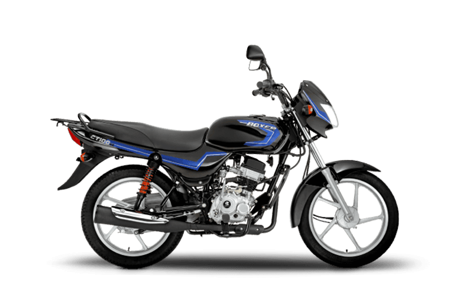

Detalles de la Moto
Marca: Bajaj
Modelo: Boxer
Año: 2023
Kilometraje: 0 km
Descripción: Aquí la famosísima, indestructible y omnipresente Boxer CT100!! La moto del día a día, la de los cobradiarios, la que aparece mágicamente en cada barrio sin que nadie sepa cómo llegó. Diseñada para recorrer caminos imposibles con un tanque de gasolina que parece infinito, esta maravilla no consume combustible, sino esperanzas y sueños. Su imponente motor 100cc te ofrece la potencia justa para escapar de clientes morosos, atravesar huecos y llegar a tu segunda familia sin que la primera sospeche. ¡Con una Boxer, el mundo es tuyo!
Precio: 6.000.000 de pesos
Contacto del Vendedor
Pepe3141592654
pepemotos@hotmail.com